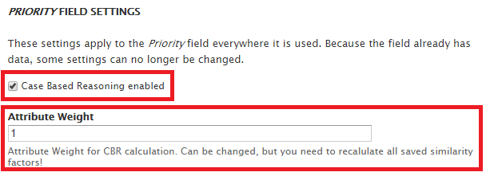
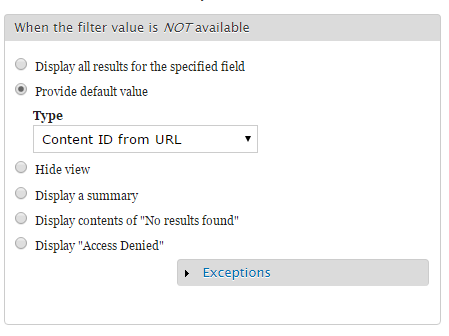

The Case Based Reasoning Module for Drupal 7 allows you to save and organize information in cases. You can create a new case at “Add content” » “CBR Case”. Create at least three cases to see how the module works.
You can add or remove fields from the content type “Case” or create your own content type with case based reasoning enabled. Read more at Create a custom content type with CBR.
Move the Block “View: CBR Similar Cases View” to any region you like. This block displays similar cases when enabled on a content type with one or more case based reasoning fields. Browse to one of your created cases. The view you enabled in this step should show a table with at least two other cases. The last column shows the similarity. This is always a number between 1 (highest possible similarity) and 0 (lowest possible similarity).
More details about the calculation of the similarity at Calculation of Similarity.
Create a new content type in drupal at “Administration” » “Structure” » “Content types” » “Add content type”. Save your content type and then click “manage fields”. To enable case based reasoning on this content type, add at least one field of the field type “CBR Number”, “CBR Range”, “CBR Select” or “CBR Taxonomy / Term Reference” or another field type listed at “Administration” » “Configuration” » “Case Based Reasoning” » “Registered CBR fields”.
Each field with CBR enabled has the following field settings:

These settings are applyed to the field on every content type it is used. If you use the field on multiply content types, you may turn on or off case based reasoning or change the attribute weight inadvertently on another type of content. It is recommended to use a field only on one content type.
If you check off “Case Based Reasoning enabled”, all values of the field are still saved and can be edited as well, but they will be ignored at the calculation of the similarity.
Each similarity of a field is multiplied with the “Attribute Weight” during the calculatation of the similarity over all fields. More at normalization.
You can change these settings even after nodes of this content type are saved. To apply the new settings to existing nodes and similarities, go to “Administration” » “Configuration” » “Case Based Reasoning” » “Registered CBR fields” and select your content type at “Recalculate Similarity” and click “Recalculate”.
You can create a view like “CBR Similar Cases View” for your own content type. Install and enable the “Views UI”-Module if you haven’t done it yet. Go to “Administration” » “Structure” » “Views” » “Add new view”. Enter a name for your view, select show “Content” and choose your content type. Untick “Create a page” and check “Create a block”. Select “Table” as display format and click “Continue & edit”.
Click on “Fields” » “Add” and check “Case Based Reasoning: Similarity” and any other fields you want to include in your view and click on “Add and configure fields”. Configure your fields and click on “Apply”.
Next, click on “Sort criteria” and check “Case Based Reasoning: Similarity”. Then click on “Apply (all displays)”. Select “Sort descending” to show the most similar case at the first position and finish with “Apply (all displays)”. If there is any other sort criteria, click on it to remove.
Click on “Advanced” and then on “Add” at “Contextual filters”. Check “Case Based Reasoning: Base Case Node ID” and click “Apply (all displays)”.
Select “Provide default value” at “When the filter value is NOT available” and set “Content ID from URL” as type. Click on “Apply (all displays)”.

Click “Save”, go to “Administration” » “Structure” » “Blocks” and move your block to a visible region.
To prevent multiple CBR blocks are displayed on one page, click on “configure” and select the required content types at “Visibility settings” » “Content types”.
The similarity is a number between 1 (highest possible similarity between two nodes) and 0 (lowest possible similarity between two nodes). The similarity is calculated at the call of the hooks node_insert and node_update and saved in the database. It is only calculated if the content type has at least one field with case based reasoning enabled, and if there is at least another node of the same content type in the database. At the call of the hook node_delete the similarity for this node is removed from the database.
You can trigger the calculation manually at “Administration” » “Configuration” » “Case Based Reasoning” » “Registered CBR fields” » “Recalculate Similarity” » “Recalculate” too.
The calculation is processed with the drupal batch api in three steps:
First, all node ids of the selected content type are loaded. Next, all fields from the content type are loaded. Only if the field type was registered at the public cbr_core_register_field function and if the user set case based reasoning to “enabled” on this field, the field is used for the calculation of the similarity.
With each pass through the callback, the similarity of one node to all other nodes of its type is calculated. For each pair of nodes and for each field the function “cbr_core_calculate_similarity_per_field” is called.
The similarity is calculated in the function “cbr_core_calculate_similarity_per_field” for a pair of nodes for a certain field. According to the field type, the calculation is different:
The stored value for each “Select” field and “Number” field is a numeric value, therefore the calculations for the “Number” field type and the “Select” field type are the same.
The similarity is the absolute difference between the two values:
Each “Range” field has a from value and a to value. Both values are numeric values.
The similarity is the sum of the absolute difference between the two from values plus the absolute difference between the two to values:
Each taxonomy can be represented as a tree. The similarity between two nodes is the shortest path from an element in the tree to the other one. If both nodes are the same, the similarity is 0 (After the normalization and the invertation, the similarity is 1). Otherwise the “Lowest Common Ancestor” (LCA) between the two nodes is identified. The similarity is the number of the elements between the “LCA” and the term of the first node plus the number of the elements between the “LCA” and the term of the second node.
if ($node1_tid == $node2_tid) {
$similarity = 0; //is inverted later to 1
} else {
$parents1 = taxonomy_get_parents_all($node1_tid);
$parents2 = taxonomy_get_parents_all($node2_tid);
$similarity = cbr_core_calculate_taxonomy_tree_distance($parents1, $parents2);
}function cbr_core_calculate_taxonomy_tree_distance($parents1, $parents2) {
if (empty($parents1)) {
return count($parents2);
}
if (empty($parents2)) {
return count($parents1);
}
//Select the last element of the parents array
//This is the root of the tree
$term1 = end($parents1);
$term2 = end($parents2);
//While both have the same term id, we move down the tree
while ($term1->tid == $term2->tid) {
array_pop($parents1);
array_pop($parents2);
$term1 = end($parents1);
$term2 = end($parents2);
}
//We found the Lowest Common Ancestor (LCA)!
//$parents1 and $parents2 contain the path to the LCA, so we return the sum
//of the number of the elements, because it's the distance between the two elements
return count($parents1) + count($parents2);
}In the function “cbr_core_batch_normalization” all similarities per field from the calculation before are normalized to a value between 0 and 1, and inverted by a subtraction from 1. This is done because a higher similarity means that two cases are more similar to each other than two cases with a lower similarity. This calculation is done for each field.
The result is the similarity between two nodes for each field. Each field has an “attribute weight“, which can be set by the user in the field settings. The similarity between two nodes is the weighted average of all normalized and inverted similarities per field.
The similarity is saved in the database table “cbr_similarity_factor” and can be used by the view module.
This hook can be used to override the calculation of the similarity between two nodes. The hook is called on registered field types only. To register a field type, call the function cbr_core_register_field.
Parameter and return value
| Name | Description |
|---|---|
| $node1 | The first node |
| $node2 | The second node |
| $field_name | The name of the field |
| $field_type | The type of the field |
| return value | The calculated similarity |
Example
function hook_calculate_cbr_similarity_per_field($node1, $node2, $field_name, $field_type) {
//The default calculation is replaced by a square division calculation
//Get the field's language
$field_language1 = field_language('node', $node1, $field_name);
$field_language2 = field_language('node', $node2, $field_name);
//Choose the right field type
if ($field_type == 'cbr_core_number') {
//Use cbr_core_get_field_value from cbr_core_calculate.inc to get
//the value of a field
$node1_fieldvalue = cbr_core_get_field_value($node1, $field_name, $field_language1, 'value');
$node2_fieldvalue = cbr_core_get_field_value($node2, $field_name, $field_language2, 'value');
//Example calculation: Square Division
return abs($node1_fieldvalue * $node1_fieldvalue - $node2_fieldvalue * $node2_fieldvalue);
}
//Otherwise, return nothing or NULL
}
This hook allows you to alter the batch configuration for calculating and saving the similarities. It allows you to override the calculation process completely. To save the similarity to the database you can use the function “cbr_core_save_similarty” from “cbr_core_calculate.inc”. More information about the drupal batch system at https://api.drupal.org/api/drupal/includes%21form.inc/group/batch/7.x
Parameter
| Name | Description |
|---|---|
| $batch | The associative array of batch information1 |
| $content_type | The type of content |
| $redirect | Path to redirect to when the batch has finished processing2 |
Example
function hook_cbr_core_calculate_similarity_batch_alter(&$batch, &$content_type, &$redirect) {
if ($content_type == 'my_content_type') {
$batch = array(
'operations' => array(
array('my_calculation', array($content_type)),
),
'finished' => 'my_content_type_batch_finished',
'title' => t('Processing CBR calculation'),
'init_message' => t('CBR calculation is starting.'),
'progress_message' => t('Processed @current out of @total.'),
'error_message' => t('CBR core calculate has encountered an error.'),
//Important: Path to file, where my_calculation is implemented
'file' => drupal_get_path('module', 'my_module') . '/my_file.inc',
);
//Redirect to front page
$redirect = "/node";
}
}This hook alters the batch context during calculation. You may use it in a custom implemented field to add field information like content type and attribute weight to $context['sandbox']['fieldinfo'][$field_name]['type'] and $context['results']['fieldinfo'][$field_name]['weight'].
This hook is called multiply times during the batch process. For more information, visit the documentation for the batch api on drupal.org or the example at https://www.drupal.org/node/180528
Parameter
| Name | Description |
|---|---|
| $content | An array that will contain information about the status of the batch. The values in $context will retain their values as the batch progresses.3 |
| $content_type | The type of content |
Example
function hook_cbr_core_batch_calculation_context_alter(&$context, &$content_type) {
//We change the attribute weight for the field type "my_type"
//Get all field names and types
$fields = field_info_instances('node', $content_type);
foreach ($fields as $field_name => $value) {
$field_info = field_info_field($field_name);
$field_type = $field_info['type'];
//Add the fieldinfo to $context if it is your type
if ($field_type == 'my_type') {
$context['sandbox']['fieldinfo'][$field_name]['type'] = $field_type;
$context['results']['fieldinfo'][$field_name]['weight'] = 7;
}
}
}This hook alters $context before the normalization of the similarity. You can use it for overriding the normalization process.
Parameter
| Name | Description |
|---|---|
| $content | An array that will contain information about the status of the batch. The values in $context will retain their values as the batch progresses.4 |
Example
function hook_cbr_core_batch_normalization_context_alter(&$context) {
//We override the normalization.
//Caution, therefore, a larger similarity means less consensus. (Inverted from normal behavior)
//You may have to update your view!
foreach ($context['results']['fields'] as $field_name => $field_factors_per_nid_tuple) {
foreach ($field_factors_per_nid_tuple as $nid_tuple => $field_factor) {
$data_per_nid_tuble[$nid_tuple][$field_name] = $field_factor;
}
}
//Skip the default implementation
$context['results']['fields'] = array();
//From cbr_core_calculate.inc:
//We sum up the similarity calculated by each field to one similarity
//Under consideration of the weight of the field
foreach ($data_per_nid_tuble as $nid_tuple => $field_array) {
$sum = 0;
$similarity = 0;
foreach ($field_array as $field_name => $current_similarity) {
$weight = $context['results']['fieldinfo'][$field_name]['weight'];
$sum += $weight;
$similarity += ($current_similarity * $weight);
}
$similarity = $sum > 0 ? $similarity / $sum : 0;
$context['results']['similarity'][$nid_tuple] = $similarity;
}
}This hook alters $context before saving the factors to the database. You may use it for additional calculations over all factors or for an alternative storage of the similarities. To turn off the default saving via cbr_core_calculate.inc, use $context['results']['factors'] = array();
Parameter
| Name | Description |
|---|---|
| $content | An array that will contain information about the status of the batch. The values in $context will retain their values as the batch progresses.5 |
Example
function hook_cbr_core_batch_save_context_alter(&$context) {
//Round all similarities to 2 decimals
foreach ($context['results']['similarity'] as $nid_tuple => $similarity) {
$context['results']['similarity'][$nid_tuple] = round($similarity, 2);
}
}This function must be called to register a field type at the case based reasoning module. Usually this is done at “hook_enable()” in the module’s .install file.
The hook calculate_cbr_similarity_per_field is called only on registered field types. All registered field types are listed at: “Administration” » “Configuration” » “Case Based Reasoning” » “Registered CBR fields”.
Parameter
| Name | Description |
|---|---|
| $field_type | The name of the field type that should be registered at the case based reasoning module. |
Example call of this function at Implementing CBR on an existing field
This function must be called to unregister a field type at the case based reasoning module. Usually this is done at “hook_disable()” in the module’s .install file.
Parameter
| Name | Description |
|---|---|
| $field_type | The name of the field type that should be unregistered at the case based reasoning module. |
Example call of this function at Implementing CBR on an existing field
Returns true, if a content type has at least one field with case based reasoning enabled.
Parameter and return value
| Name | Description |
|---|---|
| $content_type | The content type |
| return value | True, if case based reasoning is active on this content type or False, if not |
In this example, we extend the field type “datestamp” from the module “date” with case based reasoning functionality.
First, we create three files like usual in a drupal 7 module:
Second, we open cbr_date_field.info and add the following content:
name = CBR Datefield (Unix timestamp)
description = Provides case based reasoning for the date field (Unix timestamp)
core = 7.x
version = 1.0
package = Case Based Reasoning
dependencies[] = cbr_core
dependencies[] = date
Third, we open cbr_date_field.install and implement the “enable” and “disable” hook. In that hooks, we call cbr_core_register_field and cbr_core_unregister_field with the name of the field type. The name can be found in the date module.
/** Implements hook_enable() */
function cbr_date_field_enable() {
cbr_core_register_field('datestamp');
}
/** Implements hook_disable() */
function cbr_date_field_disable() {
cbr_core_unregister_field('datestamp');
}
Then, we open cbr_date_field.module and implement the hook calculate_cbr_factor_per_field. In the hook, we tell the cbr_core module how to calculate the similarity for this field type. This hook is called from several modules. Therefore, we check first if $field_type is our field type “datestamp”. Then, we load the language of the field with the function field_language. Next, we load the value of the date field with the function cbr_core_get_field_value. This function is implemented at cbr_core_calculate.inc in the cbr_core module.
Date fields can have one or two values (begin and end date). The date value 1 is stored in the database column ‘value’, the optional date value 2 in the column ‘value2’. If an end date exists on both nodes, we compare also the end dates. To check if an end date exists, we use your the function cbr_date_field_check_if_value2_exists, which can be found in the code listing below. More about how a module stores its field information in the “.install” file of the module.
The last step is the calculation. If an end date exists, we return the sum of the absolute difference of both values. If not, we return the absolute difference of the begin dates of the compared nodes. The rest of the calculation, including the normalization is done by the cbr_core module.
Upload and enable your new module. Make sure that the field type is listed correct at “Administration” » “Configuration” » “Case Based Reasoning” » “Registered CBR fields”. Add a new field of this field type to a content type. You can now enable CBR on this field type.
function cbr_date_field_calculate_cbr_factor_per_field($node1, $node2, $field_name, $field_type) {
//Choose the right field type
if ($field_type == 'datestamp') {
//Get the field's language
$field_language1 = field_language('node', $node1, $field_name);
$field_language2 = field_language('node', $node2, $field_name);
//Use cbr_core_get_field_value from cbr_core_calculate.inc to get the value of a field
$node1_fieldvalue = cbr_core_get_field_value($node1, $field_name, $field_language1, 'value');
$node2_fieldvalue = cbr_core_get_field_value($node2, $field_name, $field_language2, 'value');
//Check if end date exists
if (cbr_date_field_check_if_value2_exists($node1, $field_name, $field_language1)
&& cbr_date_field_check_if_value2_exists($node2, $field_name, $field_language2)){
$node1_fieldvalue2 = cbr_core_get_field_value($node1, $field_name, $field_language1, 'value2');
$node2_fieldvalue2 = cbr_core_get_field_value($node2, $field_name, $field_language2, 'value2');
//Begin and end timestamp: Sum of the difference between each two timestamps
return abs($node1_fieldvalue - $node2_fieldvalue) + ($node1_fieldvalue2 - $node2_fieldvalue2);
}
//One timestamp: Abs-Diff between the two timestamps
return abs($node1_fieldvalue - $node2_fieldvalue);
}
}function cbr_date_field_check_if_value2_exists($node, $field_name, $field_language) {
//Transform object into array
$node_values = get_object_vars($node);
if (array_key_exists($field_language, $node_values[$field_name])
&& array_key_exists(0, $node_values[$field_name][$field_language])) {
return array_key_exists($node_values[$field_name][$field_language][0], 'value2');
}
return false;
}